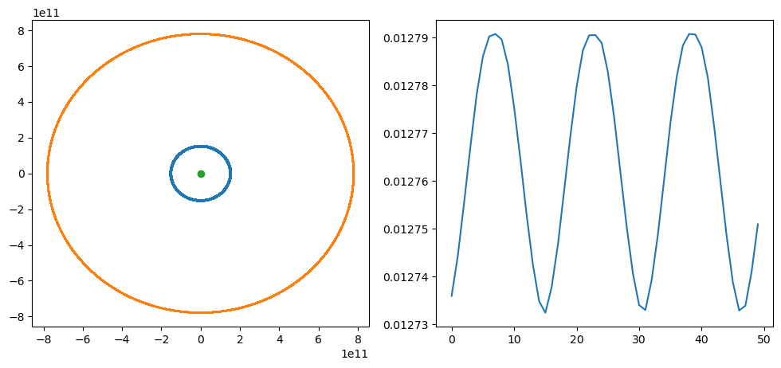

Branching and local merging
Understand git branches and merging¶
Questions
- How to not ruin working code when adding new features?
- How to work on parallel tracks (many developers, versions)?
- How to fix mistakes?
Content
- We will
- work with the basic commands in git
- go through branching and merging
Learning objectives of 'Branches'
- learners can explain and evaluate the usefulness of branches
Instructor notes
Prerequisites are:
- git basics
Lesson Plan: FIX
- Total 30 min
- Theory 20
- Discussions 10 min
Table of content
- Branching
- background
- workflows
- examples/demos
- discussion
- Merging
- background
- workflows
- conflicts?
- examples/demos
- discussion
Branching and merging¶
Software development is often not linear:
- We typically need at least one version of the code to "work" (to compile, to give expected results, ...).
- At the same time we work on new features, often several features concurrently. Often they are unfinished.
- We need to be able to separate different lines of work really well.
 Isolated tracks of work.
Isolated tracks of work.
The strength of version control is that it permits the researcher to isolate different tracks of work, which can later be merged to create a composite version that contains all changes.
- We see branching points and merging points.
- Main line development is often called
masterormain. - Other than this convention there is nothing special about
masterormain, it is just a branch. - Commits form a directed acyclic graph (we have left out the arrows to avoid confusion about the time arrow).
A group of commits that create a single narrative are called a branch. There are different branching strategies, but it is useful to think that a branch tells the story of a feature, e.g. "fast sequence extraction" or "Python interface" or "fixing bug in matrix inversion algorithm".
Typical workflows¶
One typical workflow:
$ git switch -c new-feature # create branch, switch to it
$ git commit # work, work, work, ..., and test
$ git switch master # once feature is ready, switch to master
$ git merge new-feature # merge work to present branch
$ git branch -d new-feature # remove branch
Sea also
Add Jupiter in a new branch¶
- Let's make a new branch called
jupiter - Here we add some code taking care of the motion of Jupiter and interaction with Earth
Demo or Type-along: Add Jupiter
- Make sure we are in phase with our GitHub remote!
jupiter
- Check that we are in that branch!
- Note that we have the same working tree right now as before (code/ and Figures/ folders and the planet.py file).
- Let's open the
- We will add some lines to count with the effects from the gravity of Jupiter on Earth
Code
#planet with Jupiter
import numpy as np
import matplotlib.pyplot as plt
#constants
G=6.6743e-11
AU=149.597871e9 # 1 astronomical unit (AU) is the mean distance between sun and Earth
AU1=150.8e9
dJ=5.203*AU
mj=5.97219e24
mJ=1.899e27
M=1.9891e30
day=86400;
year=31556926;
v0=AU*2*np.pi/year;
#Jupiter
v0J=dJ*2*np.pi/(11.86*year);
L=50000
x0=AU1;
y0=0;
u0=0;
x=np.zeros(365*L, dtype=float);
y=np.zeros(365*L, dtype=float);
x[0]=x0;
y[0]=y0;
u=u0;
v=v0;
x0J=dJ;
y0J=0;
u0J=0;
xJ=np.zeros(365*L, dtype=float);
yJ=np.zeros(365*L, dtype=float);
xJ[0]=x0J;
yJ[0]=y0J;
uJ=u0J;
vJ=v0J;
for i in range(1,365*L):
if i % 36500==0:
print(i/365)
x[i]=x[i-1]+day*u;
y[i]=y[i-1]+day*v;
xJ[i]=xJ[i-1]+day*uJ;
yJ[i]=yJ[i-1]+day*vJ;
axS=-G*M/(abs(x[i]**2+y[i]**2)**[3/2])*x[i];
ayS=-G*M/(abs(x[i]**2+y[i]**2)**[3/2])*y[i];
dxJ=x[i]-xJ[i];
dyJ=y[i]-yJ[i];
axEJ=-G*mJ/(abs(dxJ**2+dyJ**2)**[3/2])*dxJ;
ayEJ=-G*mJ/(abs(dxJ**2+dyJ**2)**[3/2])*dyJ;
ax=axS+axEJ;
ay=ayS+ayEJ;
u=u+ax*day;
v=v+ay*day;
axJ=-G*M/(abs(xJ[i]**2+yJ[i]**2)**[3/2])*xJ[i];
ayJ=-G*M/(abs(xJ[i]**2+yJ[i]**2)**[3/2])*yJ[i];
uJ=uJ+axJ*day;
vJ=vJ+ayJ*day;
rj=(x**2+y**2)**.5
l=1000;
e=np.zeros(int(L/l), dtype=float);
for i in range(0,int(L/l)):
win=range(i*l*365,(i+1)*l*365)
print((win))
a=max(rj[win])
b=min(rj[win])
print(a,b)
e[i]=1-2/(a/b+1)
fig=plt.figure(1,figsize=(12,5))
ax=fig.add_subplot(1,2,1)
ax.plot(x,y)
ax.plot(xJ,yJ)
ax.plot (0,0,'o')
ax=fig.add_subplot(1,2,2)
ax.plot(range(0,int(L/l)),e)
plt.savefig('../Figures/planet_earthJupiter.png', dpi=100, bbox_inches='tight')
- Do not run because we changed from 2 years simulation time to 5000 years!
- The output should look like this at least.

- Do not stage (add) yet!
Discussion
- That's long code!
- Perhaps make modular?
- The orbits seems too elliptic in the plot. The axes should be equal!
- Let's look at that in the next iteration!
git diff¶
show unstaged/uncommitted modifications
Demo: modular code in branch
Demo or type-along
- When you are done editing the files, try
git diff:
- You can use arrows or enter to scroll the output and quit with
q. - You will see some thing like this.
Output from 'diff'
diff --git a/planet.py b/planet.py
index 60b8b20..8061461 100644
--- a/planet.py
+++ b/planet.py
@@ -1,23 +1,24 @@
-#planet
+
+#planet with Jupiter
import numpy as np
import matplotlib.pyplot as plt
#constants
G=6.6743e-11
AU=149.597871e9 # 1 astronomical unit (AU) is the mean distance between sun and Earth
AU1=150.8e9
+dJ=5.203*AU
mj=5.97219e24
mJ=1.899e27
M=1.9891e30
day=86400;
year=31556926;
v0=AU*2*np.pi/year;
-Fg=G*M*mj/AU**2
-ag=Fg/mj
-Fc=mj*v0**2/AU
-ac=Fc/mj
-L=2
+#Jupiter
+v0J=dJ*2*np.pi/(11.86*year);
+
+L=50000
x0=AU1;
y0=0;
@@ -25,34 +26,69 @@ u0=0;
x=np.zeros(365*L, dtype=float);
y=np.zeros(365*L, dtype=float);
+
x[0]=x0;
y[0]=y0;
u=u0;
v=v0;
+x0J=dJ;
+y0J=0;
+u0J=0;
+xJ=np.zeros(365*L, dtype=float);
+yJ=np.zeros(365*L, dtype=float);
+xJ[0]=x0J;
+yJ[0]=y0J;
+uJ=u0J;
+vJ=v0J;
+
for i in range(1,365*L):
- print(i)
+ if i % 36500==0:
+ print(i/365)
+
x[i]=x[i-1]+day*u;
y[i]=y[i-1]+day*v;
- ax=-G*M/(abs(x[i]**2+y[i]**2)**[3/2])*x[i];
- ay=-G*M/(abs(x[i]**2+y[i]**2)**[3/2])*y[i];
+ xJ[i]=xJ[i-1]+day*uJ;
+ yJ[i]=yJ[i-1]+day*vJ;
+
+ axS=-G*M/(abs(x[i]**2+y[i]**2)**[3/2])*x[i];
+ ayS=-G*M/(abs(x[i]**2+y[i]**2)**[3/2])*y[i];
+ dxJ=x[i]-xJ[i];
+ dyJ=y[i]-yJ[i];
+ axEJ=-G*mJ/(abs(dxJ**2+dyJ**2)**[3/2])*dxJ;
+ ayEJ=-G*mJ/(abs(dxJ**2+dyJ**2)**[3/2])*dyJ;
+ ax=axS+axEJ;
+ ay=ayS+ayEJ;
+
u=u+ax*day;
v=v+ay*day;
+ axJ=-G*M/(abs(xJ[i]**2+yJ[i]**2)**[3/2])*xJ[i];
+ ayJ=-G*M/(abs(xJ[i]**2+yJ[i]**2)**[3/2])*yJ[i];
+ uJ=uJ+axJ*day;
+ vJ=vJ+ayJ*day;
+
+
rj=(x**2+y**2)**.5
-a=max(rj)
-b=min(rj)
-e=1-2/(a/b+1)
-rel=(a/b-1)
+l=1000;
+e=np.zeros(int(L/l), dtype=float);
+for i in range(0,int(L/l)):
+ win=range(i*l*365,(i+1)*l*365)
+ print((win))
+ a=max(rj[win])
+ b=min(rj[win])
+ print(a,b)
+ e[i]=1-2/(a/b+1)
fig=plt.figure(1,figsize=(12,5))
ax=fig.add_subplot(1,2,1)
ax.plot(x,y)
+ax.plot(xJ,yJ)
ax.plot (0,0,'o')
-#axis equal
+
ax=fig.add_subplot(1,2,2)
-ax.plot(range(0,365*2),rj)
+ax.plot(range(0,int(L/l)),e)
-plt.savefig('../Figures/planet_earth.png', dpi=100, bbox_inches='tight')
+plt.savefig('../Figures/planet_earthJupiter.png', dpi=100, bbox_inches='tight')
(END)
- OK, now git add/commit!
- After that, check the status:
Let's make our code modular (test in another branch)¶
- We consider the Jupiter branch dead-end.
- Let's instead start from the main branch and create a "modularity"
Demo or Type-along: git branch 2
Make four modules/files - Make sure you get back to the main branch
- Make a branch called
modularityand go to that branch
$ git switch -c modularity # create branch, switch to it
$ git branch # check that we are on the new branch
jupiter
main
* modularity
- We can now do our changes
- We will make four files
planet_main.py, containing an overview e.g. the main programplanet_data.py, containing general constants, and planetary parametersplanet_iter.py, containing the equation of motion for the planetsplanet_functions.py, containing eccentricity calculations and a plot function
planet_main.py
#planet with Jupiter
import numpy as np
from planet_functions import *
from planet_data import *
from planet_iter import *
L=400 #number of years to simulate
G,AU,M,day,year=general_constants()
# Get the mass and the initial position of Earth
x,y,u,v,mj=init_Earth(AU,year,L)
# Get the mass and the initial position of Jupiter
xJ,yJ,uJ,vJ,mJ=init_Jupiter(AU,year,L)
for i in range(1,365*L):
#Counter for each 100 years
if i % 36500==0:
print(i/365)
# New positions of Earth
x[i]=x[i-1]+day*u;
y[i]=y[i-1]+day*v;
# New positions of Jupiter
xJ[i]=xJ[i-1]+day*uJ;
yJ[i]=yJ[i-1]+day*vJ;
# acceleration of Earth due to Sun
axS, ayS = acc_effect(G,M,x[i],y[i])
# acceleration of Earth due to Jupiter
dxJ=x[i]-xJ[i];
dyJ=y[i]-yJ[i];
axEJ, ayEJ = acc_effect(G,mJ,dxJ,dyJ)
# net effect on velocity of Earth
ax=axS+axEJ;
ay=ayS+ayEJ;
u=u+ax*day;
v=v+ay*day;
# new velocity of Jupiter
uJ,vJ = planet_motion(G,M,xJ[i],yJ[i],uJ,vJ,day)
l=100
e=eccentricity(x,y,L,l)
figure_orbit(x,y,xJ,yJ,e)
planet_data.py
import numpy as np
def general_constants():
# global G, M, AU, day, year
G=6.6743e-11
AU=149.597871e9
M=1.9891e30
day=86400;
year=31556926;
return G,AU,M,day,year
def init_Earth(AU,year,L):
mj=5.97219e24
AU1=150.8e9
x0=AU1;
v0=AU*2*np.pi/year;
y0=0;
u0=0;
x=np.zeros(365*L, dtype=float);
y=np.zeros(365*L, dtype=float);
x[0]=x0;
y[0]=y0;
u=u0;
v=v0;
return x,y,u,v,mj
def init_Jupiter(AU,year,L):
dJ=5.203*AU
mJ=1.899e27
v0J=dJ*2*np.pi/(11.86*year);
x0J=dJ;
y0J=0;
u0J=0;
xJ=np.zeros(365*L, dtype=float);
yJ=np.zeros(365*L, dtype=float);
xJ[0]=x0J;
yJ[0]=y0J;
uJ=u0J;
vJ=v0J;
return xJ,yJ,uJ,vJ,mJ
planet_iter.py
planet_functions.py
import numpy as np
import matplotlib.pyplot as plt
def eccentricity(x,y,L,l):
rj=(x**2+y**2)**.5
e=np.zeros(int(L/l), dtype=float);
for i in range(0,int(L/l)):
win=range(i*l*365,(i+1)*l*365)
a=max(rj[win])
b=min(rj[win])
e[i]=1-2/(a/b+1)
return e
def figure_orbit(x,y,xJ,yJ,e):
fig=plt.figure(1,figsize=(12,5))
ax=fig.add_subplot(1,2,1)
ax.plot(x,y)
ax.plot(xJ,yJ)
ax.plot (0,0,'o')
ax.set_aspect('equal', 'box')
ax=fig.add_subplot(1,2,2)
ax.plot(range(0,len(e)),e)
figname='../Figures/planet_earthJupiter2.png'
plt.savefig(figname, dpi=100, bbox_inches='tight')
- add and commit
- We can now check the history with a command that graphically tries to show the log with branches
Tip
An important alias
- We will now define an alias in Git, to be able to nicely visualize branch structure in the terminal without having to remember a long Git command.
This will enable you to use git graph for short
- It will now give you something like this:
$ git graph
* 4d4acaf (HEAD -> modularity) 4 modular files
| * 2d4e252 (jupiter) add jupiter
|/
* b9465e4 (origin/main, main) planet.py documentation
* 6a416b5 add folders and planet code
gitGraph
commit id: "add planet.py"
branch jupiter
checkout jupiter
commit id: "add jupiter"
checkout main
branch modular
checkout modular
commit id: "4 modular files"
Meanwhile...¶
Back in main branch
- We spotted an unnecessary print line in the main branch code.
- Perhaps we're not finished with the modular branch, so let's fix this in the main branch.
Demo or type-along
- Go to the main branch:
- Note that we now just find the
planet.pyfile! - Let's remove the print line around row 35 in the for-loop.
- Save, add and commit
- And do the graph!
$ git graph
* 000b440 (HEAD -> main) rm print
| * 4d4acaf (modularity) 4 modular files
|/
| * 2d4e252 (jupiter) add jupiter
|/
* b9465e4 (origin/main) planet.py documentation
* 6a416b5 add folders and planet code
gitGraph
commit id: "add planet.py"
branch jupiter
checkout jupiter
commit id: "add jupiter"
checkout main
branch modular
checkout modular
commit id: "4 modular files"
checkout main
commit id:"rm print"On GitHub¶
- Let's view the branches on Github!
- Go to Insights in the top menu of the
planet-bjornrepo and then go to Network in side-bar - If we do this after the merging the branches do not show up.
Merging¶
- It turned out that our experiment with modularity was a good idea.
- Our goal now is to merge modularity into main.
Demo: git merge
Merge into main
- once all features are ready, switch to main!
$ git switch main # switch to main branch
$ git branch # check that we are on main branch
$ git merge modularity # merge modularity into main
Merge made by the 'ort' strategy.
code/planet_data.py | 46 +++++++++++++++++++++++++++++++++++++++++++
code/planet_functions.py | 29 +++++++++++++++++++++++++++
code/planet_iter.py | 17 ++++++++++++++++
code/planet_main.py | 51 ++++++++++++++++++++++++++++++++++++++++++++++++
4 files changed, 143 insertions(+)
create mode 100644 code/planet_data.py
create mode 100644 code/planet_functions.py
create mode 100644 code/planet_iter.py
create mode 100644 code/planet_main.py
$ git graph
* 1b29a8f (HEAD -> main) Merge branch 'modularity'
|\
| * 4d4acaf (modularity) 4 modular files
* | 000b440 rm print
|/
| * 2d4e252 (jupiter) add jupiter
|/
* b9465e4 (origin/main) planet.py documentation
* 6a416b5 add folders and planet code
gitGraph
commit id: "add planet.py"
branch jupiter
checkout jupiter
commit id: "add jupiter"
checkout main
branch modular
checkout modular
commit id: "4 modular files"
checkout main
commit id:"rm print"
merge modular- NOTE that (origin/main) planet.py documentation is not up-to-date
- In other words: GitHub has an old version of the project
- push to GitHub
git push
$ git graph
* 1b29a8f (HEAD -> main, origin/main) Merge branch 'modularity'
|\
| * 4d4acaf (modularity) 4 modular files
* | 000b440 rm print
|/
| * 2d4e252 (jupiter) add jupiter
|/
* b9465e4 planet.py documentation
* 6a416b5 add folders and planet code
- Now local Git and GitHub are in phase!
On GitHub¶
- Let's view the branches on Github!
- Go to Insights in the top menu of the
planet-bjornrepo and then go to Network in side-bar - If we did this after the merging the branches do not show up.
Summary¶
- Now we know how to save snapshots:
- And that is what we do as we program.
- Other very useful commands are these:
$ git init # initialize new repository
$ git add # add files or stage file(s)
$ git commit # commit staged file(s)
$ git status # see what is going on
$ git log # see history
$ git diff # show unstaged/uncommitted modifications
$ git show # show the change for a specific commit
$ git mv # move tracked files
$ git rm # remove tracked files
$ git switch -b wild-idea # create branch, switch to it, work, work, work ...
$ git switch main # realize it was a bad idea, back to main/master
$ git branch -D wild-idea # it is gone, off to a new idea
$ git merge
Overview workflow

Parts to be covered!
- ☑ Source/version control
- Git
- We have a starting point!
- GitHub as remote backup
- branches
- ☑ Planning
- ☑ Analysis
- ☑Design
- ☑ Testing
- Different levels
- ☐ Collaboration
- GitHub
- pull requests
- ☐ Sharing
- ☑ open science
- ☐ citation
- ☑ licensing
- ☐ Documentation
- ☑ in-code documentation
Keypoints
- Initializing a Git repository is simple:
git init. - Commits should be used to tell a story.
- Git uses the .git folder to store the snapshots.
- Don’t be afraid to stage and commit often. Better too o
- A branch is a division unit of work, to be merged with
- A tag is a pointer to a moment in the history of a proj
- A repository can have one or multiple remotes (we will
- Local branches often track remote branches.
- A remote serves as a full backup of your work.